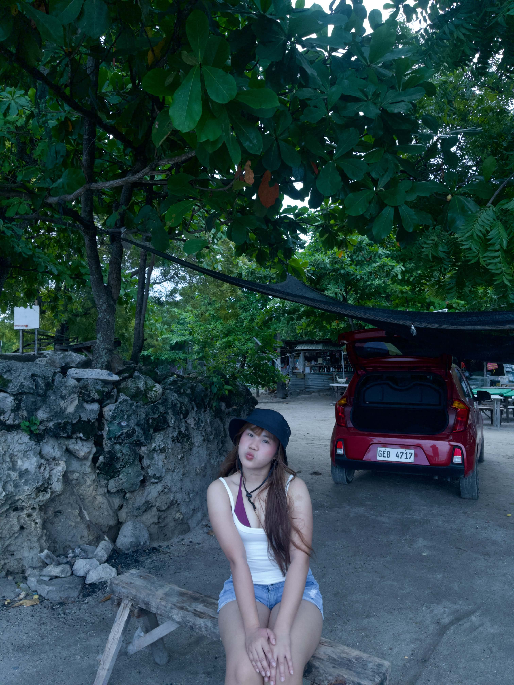

✦ WELCOME TO MY LITTLE SPACE
Hello, I'm
Princess Rose.
Second-Year BSIT Student
Just a girl with big dreams, a love for creativity, coffee, and new adventures. Currently enjoying my journey as a student while learning, working, and discovering more about myself.

19
Years Old
2nd
Year BSIT
💜
Favorite Color
A little bit about me.
Some things that make me happy and make me who I am.
IT Student
Exploring technology, learning programming, and improving my skills one step at a time.
Coffee & Matcha
I enjoy making different drinks, especially coffee and matcha. Being a barista makes me appreciate the art of drink-making even more.
Sports Lover
I love playing volleyball and would love to try tennis soon.
About Me.
Get to know the person behind this little portfolio.
Princess Rose T. Antipuesto
Just living, learning, and dreaming. ♡
Hello there! ✨
I'm Princess Rose T. Antipuesto, a 19-year-old second-year Bachelor of Science in Information Technology student from Lapu-Lapu City, Cebu.
I'm a cheerful and curious person who loves trying new things, exploring different interests, playing sports, and spending time with people who matter to me.
Aside from studying, I currently work as a barista. I enjoy preparing coffee and experimenting with different drinks. I also love matcha!
I have many dreams for my future. I want to finish my studies, build a career, travel around the world, experience new adventures, and most importantly, spoil my family and give back to them.
Things I Love.
Volleyball
I enjoy playing volleyball and having fun while staying active.
Tennis
One of the sports I really want to learn and experience in the future.
Coffee Making
I enjoy making coffee and experimenting with different flavors and drinks.
Matcha
A favorite drink that I can enjoy anytime.
Traveling
I dream of visiting different countries and experiencing different cultures.
Entertainment
I enjoy mobile games, movies, TikTok, and discovering new things.
My Skills.
Technology
HTML CSS Java SQL Computer TroubleshootingBarista Skills
Coffee Preparation Drink Making Customer Service TeamworkPersonal Skills
Adaptability Time Management Communication Willingness to LearnMy Future Goals.
Enjoy My College Journey
Continue learning as a BSIT student, improving my skills, and completing my academic requirements.
Graduate and Build My Career
Finish my degree and find opportunities where I can grow professionally.
Travel Around the World
Explore different countries, experience new cultures, and create unforgettable memories.
Give Back to My Family
Become successful enough to spoil my family and give them the comfortable life they deserve.
My Projects.
A showcase of my projects and experiences as an IT student.
DressCart Online Dress Shopping
A web-based dress shopping system where customers can browse dresses, view product details, add items to their cart, and proceed to checkout.
HTML CSS JavaScriptPersonal Portfolio Website
A personal website created to introduce myself, share my hobbies, showcase my projects, and express my goals.
HTML CSS JavaScriptMy Little Journal.
Random thoughts, experiences, and things I want to share.
My Journey as an IT Student
Being an IT student is a journey of learning and discovering new things. There are challenging lessons, but every experience helps me improve.
Life Behind the Coffee Bar
Working as a barista has allowed me to enjoy making drinks, learning new techniques, and interacting with different people. Coffee and matcha make the experience even better!
Becoming a Better Version of Myself
I believe that growing up means learning from experiences, taking chances, and continuing to work toward the life I want.
✦ THANK YOU FOR VISITING
Let's stay connected.
Thank you for taking the time to visit my little corner of the internet. I hope you enjoyed getting to know me!

Princess Rose T. Antipuesto
BSIT Student | Barista | Dreamer
📍 Lapu-Lapu City, Cebu, Philippines